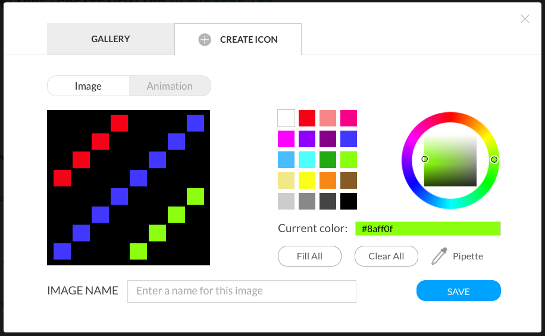

I was excited to learn about the LaMetric Time when it launched on Kickstarter in July 2014. I was lucky enough to be an early backer at the $119 price for a plug-in LaMetric (no battery), and I just opened it up and spent about an hour playing with it.
LaMetric Time was interesting to me because of its pixelated LED display and potential for customization, displaying any data that’s available from the web.
Here’s my initial thoughts, though I will be writing about this display later as I customize it for my needs and start using it regularly.
Hardware
The Time has attractive industrial design. The display has a nice matte black textured finish that resists fingerprints, but does seem to collect dust, and rounded corners on the vertical edges.

The front of the display hides the LEDs perfectly when off. You can’t tell that it’s a display at all. When on, the LEDs are separated into square pixels with thin borders between each pixel. The diffusion within each square is pretty good, though you can see it’s brighter at the center than the edges instead of ideally even brightness across the square.
There’s not a lot you can do with 8x8 graphics, though it’s pretty easy to tell what the icons represent. The animations are very simple, and I haven’t yet dug in to figure out if that’s a limitation of the number of frames, color palette available, a stylistic choice, or just because it’s harder to make a more complicated animation. It’s unfortunate that only the left 8x8 side on the display is RGB, and the rest is only capable of display of displaying white/gray. The music visualization in the Radio app is a little boring with just white bars, and scrolling text color is limited to white so you can’t use message color as additional information.
The display is not designed for wall mounting. Because the USB power jack is on the back of the display and the USB cable included plugs straight in, the display can’t sit up against a wall. It needs about 1.5” (3.8cm) clearance for the USB cable - about the same thickness of the display. The back seems to be the only logical place to put the USB jack to support scrolling a message across multiple displays, but including a USB cable with a right-angle plug would have kept a lower profile when the display is plugged in.
The three buttons on the top (left, right, action) are easy to press and have nice tactile feedback. The volume and power buttons are on the sides, and it takes extra effort to keep the display from sliding sideways on the table when pressing these buttons. Either I need to hold the display from the other side with a second hand, or press down on the top of the display without accidentally pressing a top button to change the volume. Maybe the displays that come with a battery are heavy enough to resist sliding when pushing buttons from the side.
Usage
I tried the built-in Clock, Weather, Stopwatch, and Timer apps, and they work well. You can set the alarm or the initial timer value right from the display or through the app. More detailed customizations like choosing an icon to display next to the clock, or choosing an alarm sound require the app.
I loaded the Message Board app which lets you set up to five messages. Each message has an optional icon and text that stays put the screen if it fits, or scrolls if it’s too long. There’s no customization for message cycle time or scrolling text speed, and I felt like both were on the fast side. With the display placed about a foot to the right of my monitor while typing this review, I felt the movement was distracting me.
I didn’t back the Kickstarter campaign to get a Bluetooth speaker, but that feature was added as a bonus. The sound quality is decent, but it seems to be missing some features that even my generic Bluetooth speakers have. When connecting from my iPhone, I need to go into Bluetooth Settings on the phone to add the speaker each time it’s enabled, while my other speakers are automatically discovered by the phone when powered on or bluetooth is enabled. I can’t change the volume using the music app on my phone, and have to use the awkward hardware volume buttons, or go into the settings menu of the LaMetric app. Hopefully these issues can be fixed in a future software update.

The graphic equalizer that shows when audio is playing through bluetooth or online radio has a poor update rate that I don’t think tracks well to the music.
Minor nit-picks:
- There’s no built in night/sleep mode. If I want to significantly dim the display at night without fully powering off the display, I need to install a third party app from the LaMetric app store built to overcome this shortcoming.
- The sounds on the display are a bit basic or feel outdated. The sound when changing volume sounds like a keypress from a touch tone phone, and isn’t very pleasant. The default alarm sounds are very tinny, though the speakers are capable of playing high quality music.
Customization
Though people just started receiving displays, there are more than a few third-party apps in the LaMetric App Store. It appears you do need some web development experience to make an app. The display must poll your server or listen to push notifications for updated information and doesn’t have the ability to parse data directly from a third-party API. IFTTT support for customizing the display without coding wasn’t available while writing this review, though it is supposed to be coming.
User-created apps are limited to displaying indictors, or triggering a server when a button is pressed. There’s no support for creating an app with more complex behavior. I was hoping to see a Pomodoro Timer app, but that is unlikely unless LaMetric creates this app themselves or adds support for more complex user-created apps.

Icon creation is limited to point and click in the web application or phone app. There are no import capabilities, so creating or editing an icon - especially an animated icon - is tedious.
Documentation and Forums
The documentation in the form of a PDF user guide, FAQ built into the app, and knowledge base seems thorough.
There is a user forum with mixed participation by LaMetric - some threads have responses, and some threads appear ignored though LaMetric says they are reading everything.
Issues
Though the display requires use of the cloud servers, interacting with the display requires being on the same LAN, so you can’t update the display remotely. If you want to use the display as a remote-controlled message board, that use case isn’t supported and the developers haven’t commented on the issue yet.
Concerns
As with a lot of internet-enabled products, the functionality of the device depends on servers in the cloud and an app to be maintained, and there is no option for directly driving the display bypassing the cloud. If/when support for the display ends, the device becomes a paperweight.
Conclusions
Overall I like the display, and it seems like a has a lot of potential, though the software feels like a beta release. This is what you might expect with initial deliveries from a Kickstarter campaign, but that is not how it is marketed for new customers paying full price.
The retail price is quite high: $179 for the unit I’m reviewing and $199 for a display with battery, plus $25 shipping. I’m not sure how many people think the stereo Bluetooth speaker and online radio feature is useful, but I would rather have seen a cheaper price without those features.
Subscribe to get more articles about this and similar displays over the coming months. I plan to write more about customizing the LaMetric Time after IFTTT support is added, and might do a teardown to see what’s inside the hardware.